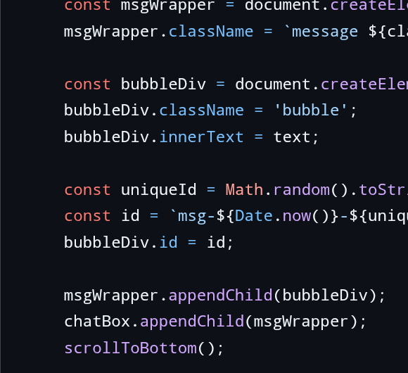
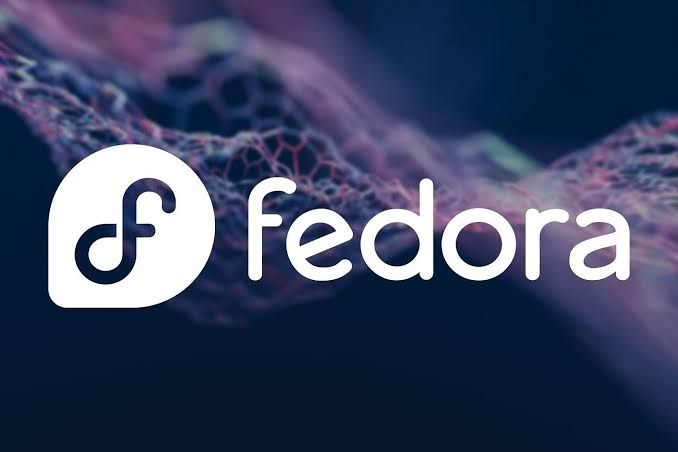
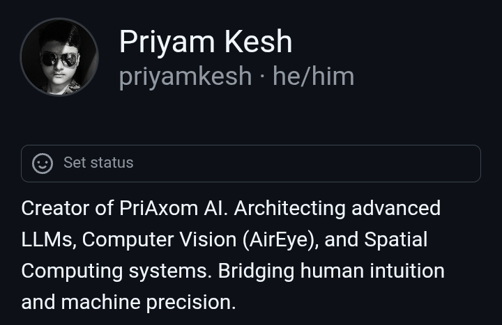

PriAxom Projects Gallery.
A visual exploration of neural networks, computer vision models, and LLM architectures.








A visual exploration of neural networks, computer vision models, and LLM architectures.


